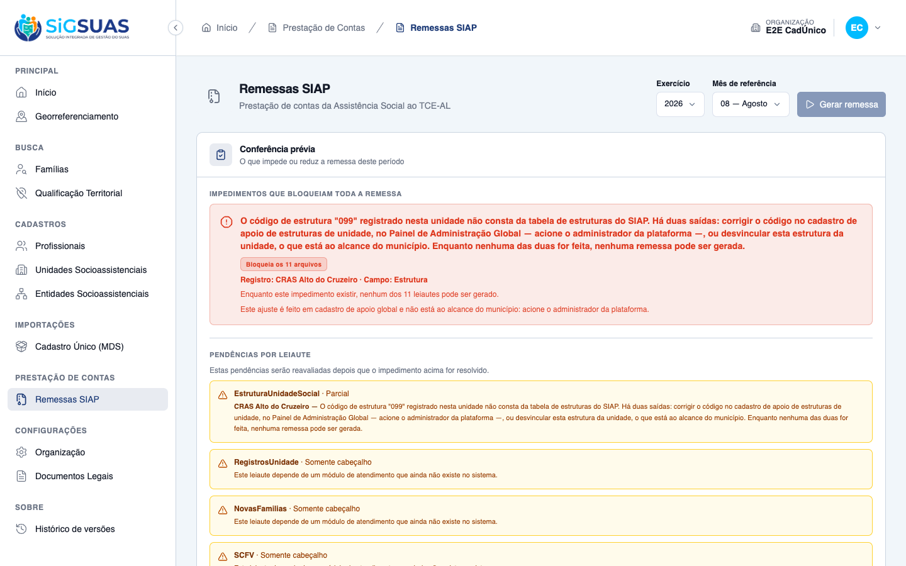

Relatório de Critérios de Aceite — HU #10373 (US-SIAP-06)
Resumo
12 critérios avaliados (CA01–CA08 com os desdobramentos CA02b, CA03b, CA03c e CA03d), mais a RN04d, a proteção TOCTOU e a não-regressão dos quatro bloqueios anteriores — todos atendidos, nenhum reprovado. Esta HU não constrói o leiaute: ele já existia e já emitia registros. Ela fecha uma única lacuna — validar o código da estrutura contra a Tabela 36 — e por isso CA01, CA03, CA03b, CA03d, CA04, CA05 e CA06 são regressão: passavam antes e precisavam continuar passando depois.
O que muda de verdade é o fim da omissão silenciosa (RN04d). Havia dois furos no mesmo
ponto: código numérico fora de 1–21 nem era detectado (paddedCode('099') devolvia
99 e ia ao arquivo, que o Tribunal recusa), e código não numérico era detectado mas
apenas pulado — a estrutura sumia do arquivo sem que ninguém soubesse. O município declarava
ao TCE-AL menos estrutura do que tem. Agora, ou a estrutura sai no arquivo, ou impede a
remessa: não há terceira saída.
A diferença desta HU para a #10372 está na mensagem. No bloqueio por equipamento o município não tinha saída própria — só restava esperar o Super Admin. Aqui ele tem: desvincular a estrutura da unidade resolve. A mensagem oferece as duas saídas (RN08/D03), e o CA03c a verifica no texto renderizado, não na chave de tradução.
E o critério mais valioso do conjunto é o CA08. Ele não testa layout: testa se a correção do
cartão de impedimento (api f69323c + client 97229a9) generaliza para
uma causa que não existia quando ela foi escrita. A resposta é sim — o cartão não exibe
o texto do CARDUG, não oferece o atalho "Corrigir nos Parâmetros TCE/AL" e orienta acionar
o administrador da plataforma, sozinho, sem nenhuma alteração no client/.
Suíte anexa: 195 testes Pest (1007 asserções) em --filter=Siap, todos verdes;
3348 testes na suíte cheia, 0 falhas. Onde não há captura de tela, a seção declara
qual evidência sustenta o critério, em vez de exibir um verde genérico.
| CA | Critério | Status |
|---|---|---|
| CA01 | Estruturas das unidades no leiaute (happy path) | ATENDIDO · automatizado |
| CA02 | Bloqueio por código fora da Tabela 36 (RN04 — D02) | ATENDIDO · automatizado |
| CA02b | Código não numérico cai na mesma recusa | ATENDIDO · automatizado |
| CA03 | Estrutura de item inativado continua na remessa (RN05) | ATENDIDO · automatizado · regressão |
| CA03b | Estrutura de perfil escolar informada quando a unidade a possui (RN04b) | ATENDIDO · automatizado · regressão |
| CA03c | Estrutura própria do município bloqueia — e a mensagem oferece AS DUAS saídas (RN08 — D03) | ATENDIDO · automatizado |
| CA03d | Estrutura fora da tabela SEM vínculo não gera pendência (D08) | ATENDIDO · automatizado |
| CA04 | Unidade sem estrutura não gera linha | ATENDIDO · automatizado · regressão |
| CA05 | Município sem nenhuma estrutura registrada — leiaute em branco (RN07) | ATENDIDO · automatizado · regressão |
| CA06 | Isolamento entre municípios (RN09) | ATENDIDO · automatizado · regressão |
| CA07 | A pendência aparece nas duas zonas (D03) | ATENDIDO · automatizado |
| CA08 | O cartão de impedimento aponta o lugar certo — sem atalho (D03) | ATENDIDO · automatizado |
| RN04d | Nenhuma estrutura vinculada é omitida em silêncio — o coração da HU | ATENDIDO · automatizado |
| TOCTOU | O bloqueio é reavaliado dentro do job | ATENDIDO · automatizado |
| REGRESSÃO | Os quatro bloqueios anteriores e a pendência informativa continuam como estavam | ATENDIDO · automatizado |
| §8 | Dimensionamento do impacto — consultas §8.1 a §8.3 da spec | EXECUTADO EM BASE NÃO REPRESENTATIVA |
| ACHADO 1 | Falta a redação própria de estruturas no cartão — o fallback genérico cobriu, como projetado | FOLLOW-UP DE BAIXO RISCO (D07) |
| ACHADO 2 | SocialUnitStructure usa LogsActivity e audita o code — a lacuna prevista NÃO existe | ACHADO POSITIVO |
| ACHADO 3 | Quinto leiaute a bloquear — o efeito acumulado nunca foi avaliado com o PO | RISCO ABERTO · A DECIDIR COM O PO |
As cinco capturas deste dossiê foram refeitas contra a branch de integração. Motivo: depois da entrega original, a conferência prévia passou a identificar o registro pendente pelo nome. Nas imagens anteriores a unidade não aparecia identificada na tela, de modo que elas não demonstravam a parte dos critérios CA02 e CA03c que pede para indicar a unidade. Hoje o cartão traz "Registro: CRAS Alto do Cruzeiro · Campo: Estrutura".
O comportamento de fundo não mudou: código de estrutura fora da tabela continua impedindo a remessa inteira, a mensagem continua específica de estruturas e continua oferecendo as duas saídas, e o cartão continua sem atalho de correção.
Observação nova, surgida na recaptura: a mensagem do impedimento diz que há duas saídas — corrigir o código no cadastro global ou desvincular a estrutura da unidade, "o que está ao alcance do município" —, mas a linha de encaminhamento logo abaixo afirma que "este ajuste é feito em cadastro de apoio global e não está ao alcance do município". As duas frases se contradizem sobre a segunda saída. É a mesma linha genérica de que trata o ACHADO 1, agora com um efeito concreto: ela pode desencorajar o município de usar a saída que ele próprio consegue executar.
CA01 — Estruturas das unidades no leiaute (happy path) ATENDIDO · automatizado
Critério (Gherkin): Dado que "CRAS Centro" tem 4 estruturas e "CREAS" tem 3
Quando a remessa da referência 08/2026 for gerada
Então o leiaute EstruturaUnidadeSocial traz 7 linhas
E cada linha apresenta o NumeroMDS da unidade e o código da Estrutura
Natureza da evidência: este critério fala do conteúdo do arquivo. A evidência de primeira classe é o próprio trecho do EstruturaUnidadeSocial.xml, extraído do zip de uma remessa realmente gerada pelo endpoint POST client/siap-remittances — não montado à mão. Não há tela a fotografar: screenshot de XML aberto no navegador não acrescentaria nada ao arquivo em si.
Duas unidades completas no mesmo tenant — a completude importa: desde a HU #10370 uma unidade sem NumeroMDS bloqueia a remessa inteira e mascararia este critério, e o mesmo vale para os bloqueios de entidade (#10371) e equipamento (#10372). CRAS com as estruturas 001 (Água Potável), 004 (Banheiro), 017 (Recepção) e 018 (Sala de Atendimento em Grupo); CREAS com 002, 006 e 017.
Resultado: 7 linhas — quatro com o NumeroMDS do CRAS e três com o do CREAS —, cada uma com os dois campos obrigatórios do Manual (NumeroMDS e Estrutura) e o código já convertido para a escala do SIAP (001 → 1, 018 → 18). Nenhuma pendência. Sete vínculos, sete linhas: é também a contagem que a RN04d exige — nenhuma estrutura some pelo caminho.
<?xml version="1.0"?>
<SIAP>
<Codigo>004821</Codigo>
<Exercicio>2026</Exercicio>
<Mes>07</Mes>
<EstruturaUnidadeSocial>
<NumeroMDS>9507697178507</NumeroMDS>
<Estrutura>1</Estrutura>
</EstruturaUnidadeSocial>
<EstruturaUnidadeSocial>
<NumeroMDS>9507697178507</NumeroMDS>
<Estrutura>4</Estrutura>
</EstruturaUnidadeSocial>
<EstruturaUnidadeSocial>
<NumeroMDS>9507697178507</NumeroMDS>
<Estrutura>17</Estrutura>
</EstruturaUnidadeSocial>
<EstruturaUnidadeSocial>
<NumeroMDS>9507697178507</NumeroMDS>
<Estrutura>18</Estrutura>
</EstruturaUnidadeSocial>
<EstruturaUnidadeSocial>
<NumeroMDS>1926120640243</NumeroMDS>
<Estrutura>17</Estrutura>
</EstruturaUnidadeSocial>
<EstruturaUnidadeSocial>
<NumeroMDS>1926120640243</NumeroMDS>
<Estrutura>2</Estrutura>
</EstruturaUnidadeSocial>
<EstruturaUnidadeSocial>
<NumeroMDS>1926120640243</NumeroMDS>
<Estrutura>6</Estrutura>
</EstruturaUnidadeSocial>
</SIAP>CA01 — CRAS com 4 estruturas (001,004,017,018) + CREAS com 3 (002,006,017) = 7 linhas. MDS do CRAS 9507697178507, MDS do CREAS 1926120640243 Remessa GERADA de verdade via POST /api/client/siap-remittances; XML extraído do zip.
CA02 — Bloqueio por código fora da Tabela 36 (RN04 — D02) ATENDIDO · automatizado
Critério (Gherkin): Dado uma estrutura vinculada a uma unidade com código fora de 1..21
Quando eu solicitar a geração da remessa
Então a remessa não é gerada
E a conferência aponta pendência impeditiva indicando a unidade e a estrutura
E a mensagem cita o Painel de Administração Global
Um CRAS com duas estruturas: 004 (Banheiro, válida) e 099, criada à mão no Painel de Administração Global e fora dos 21 itens da Tabela 36. Antes desta HU o paddedCode('099') devolvia 99, que ia ao arquivo como está e o Tribunal recusava — a prestação de contas voltava "aceita pela metade".
Resultado: 422 em social_unit_structures. E "a remessa não é gerada" literalmente: siap_remittances fica com 0 linhas, nenhum job é despachado e nenhum arquivo é escrito no storage. A pendência nomeia a unidade pelo subject_uuid e traz o código recusado no texto. O teste cobre '022', '099' e '000' em três execuções isoladas — os três vizinhos do domínio, de cada lado.
{
"_leitura": "CA02 — estrutura de código \"099\" (fora de 1..21) vinculada ao CRAS. O POST devolve 422 em social_unit_structures, siap_remittances fica em 0 linhas, nenhum job é despachado e nenhum arquivo é escrito: \"a remessa não é gerada\", literalmente.",
"unidade_uuid": "f373b9b5-c5b1-4a38-9fc8-baf1e6341c5a",
"unidade_mds": "7793690127265",
"http_status": 422,
"resposta_do_post": {
"message": "A remessa SIAP não pode ser gerada: 1 estrutura vinculada às unidades está com código fora da tabela de estruturas do SIAP. Há duas saídas: corrigir o código no cadastro de apoio de estruturas de unidade, no Painel de Administração Global — acione o administrador da plataforma —, ou desvincular a estrutura da unidade. Veja quais na conferência prévia.",
"errors": {
"social_unit_structures": [
"A remessa SIAP não pode ser gerada: 1 estrutura vinculada às unidades está com código fora da tabela de estruturas do SIAP. Há duas saídas: corrigir o código no cadastro de apoio de estruturas de unidade, no Painel de Administração Global — acione o administrador da plataforma —, ou desvincular a estrutura da unidade. Veja quais na conferência prévia."
]
}
},
"remessas_no_banco": 0,
"jobs_despachados": 0,
"arquivos_no_storage": 0
}
CA02b — Código não numérico cai na mesma recusa ATENDIDO · automatizado
Critério (Gherkin): Dado uma estrutura vinculada com código não numérico
Quando eu solicitar a geração da remessa
Então a remessa não é gerada, pela mesma pendência
Um CRAS com 017 (Recepção, que sairia no arquivo) e EST, não numérico. É o caso mais grave dos dois: até esta HU ele nem sequer ia ao arquivo errado — a linha simplesmente sumia, por um continue mudo no rows(), e o município declarava ao Tribunal menos estrutura do que tem, sem saber. É exatamente o que a RN04d proíbe.
Resultado: mesma recusa do CA02 — 422, mesmo errorCode (siap_structure_code_unmapped), mesma pendência bloqueante. Nem o código inválido vai ao arquivo, nem a Recepção sai sozinha fingindo que o inventário está completo.
Leitura: CA02b — código "EST", não numérico. É o caso mais grave dos dois: até esta HU a linha simplesmente SUMIA do arquivo (continue mudo no rows()) e o município declarava ao Tribunal menos estrutura do que tem, sem saber. Agora cai na MESMA recusa do CA02.
{
"_leitura": "CA02b — código \"EST\", não numérico. É o caso mais grave dos dois: até esta HU a linha simplesmente SUMIA do arquivo (continue mudo no rows()) e o município declarava ao Tribunal menos estrutura do que tem, sem saber. Agora cai na MESMA recusa do CA02.",
"http_status": 422,
"resposta_do_post": {
"message": "A remessa SIAP não pode ser gerada: 1 estrutura vinculada às unidades está com código fora da tabela de estruturas do SIAP. Há duas saídas: corrigir o código no cadastro de apoio de estruturas de unidade, no Painel de Administração Global — acione o administrador da plataforma —, ou desvincular a estrutura da unidade. Veja quais na conferência prévia.",
"errors": {
"social_unit_structures": [
"A remessa SIAP não pode ser gerada: 1 estrutura vinculada às unidades está com código fora da tabela de estruturas do SIAP. Há duas saídas: corrigir o código no cadastro de apoio de estruturas de unidade, no Painel de Administração Global — acione o administrador da plataforma —, ou desvincular a estrutura da unidade. Veja quais na conferência prévia."
]
}
},
"blocking": {
"can_generate": false,
"pendencies": [
{
"scope": "blocking",
"kind": "domain_unmapped",
"field_name": "Estrutura",
"subject_type": "social_unit",
"subject_uuid": "78a9c7a4-6fba-4ae2-b0e2-87991aba3d8d",
"affected_count": 1,
"message_key": "siap_remittance.pendency.structure_code_unmapped",
"message": "O código de estrutura \"EST\" registrado nesta unidade não consta da tabela de estruturas do SIAP. Há duas saídas: corrigir o código no cadastro de apoio de estruturas de unidade, no Painel de Administração Global — acione o administrador da plataforma —, ou desvincular esta estrutura da unidade, o que está ao alcance do município. Enquanto nenhuma das duas for feita, nenhuma remessa pode ser gerada.",
"blocks_entire_remittance": true,
"affected_layouts": 11,
"resolution": {
"scope": "global",
"resource": "social-unit-structures",
"requires_role": null
}
}
]
}
}
CA03 — Estrutura de item inativado continua na remessa (RN05) ATENDIDO · automatizado · regressão
Critério (Gherkin): Dado que "Sala de Atendimento em Grupo" foi inativada no cadastro de apoio
mas continua vinculada à unidade "CRAS Centro"
Quando a remessa for gerada
Então essa estrutura consta do leiaute para "CRAS Centro"
Natureza da evidência: este critério fala do conteúdo do arquivo. A evidência de primeira classe é o próprio trecho do EstruturaUnidadeSocial.xml, extraído do zip de uma remessa realmente gerada pelo endpoint POST client/siap-remittances — não montado à mão. Não há tela a fotografar: screenshot de XML aberto no navegador não acrescentaria nada ao arquivo em si.
A estrutura 018 (Sala de Atendimento em Grupo) foi inativada no cadastro de apoio global (is_active = false) e permanece vinculada ao CRAS.
Resultado: a linha <Estrutura>18</Estrutura> consta do arquivo. Inativar no cadastro de apoio não é o mesmo que a unidade ter deixado de ter a sala: o leiaute é o retrato do que a unidade tem. A relação structures() não filtra is_active, e é isso que este teste guarda contra regressão.
Ressalva honesta (§17.4 da spec): este comportamento acontece hoje por herança, não por decisão explícita da área de negócio — a relação simplesmente nunca filtrou is_active. A RN05 não foi confirmada com o negócio, e o artefato do PO pede que a resposta seja a mesma aqui e na RN08 da #10372. Segue como dúvida aberta.
<?xml version="1.0"?>
<SIAP>
<Codigo>004821</Codigo>
<Exercicio>2026</Exercicio>
<Mes>07</Mes>
<EstruturaUnidadeSocial>
<NumeroMDS>2745110725096</NumeroMDS>
<Estrutura>18</Estrutura>
</EstruturaUnidadeSocial>
<EstruturaUnidadeSocial>
<NumeroMDS>2745110725096</NumeroMDS>
<Estrutura>1</Estrutura>
</EstruturaUnidadeSocial>
</SIAP>CA03/RN05 — "Sala de Atendimento em Grupo" (018) foi INATIVADA no cadastro de apoio global (is_active = false) e continua vinculada ao CRAS: a linha <Estrutura>18</Estrutura> permanece no arquivo Remessa GERADA de verdade via POST /api/client/siap-remittances; XML extraído do zip.
CA03b — Estrutura de perfil escolar informada quando a unidade a possui (RN04b) ATENDIDO · automatizado · regressão
Critério (Gherkin): Dado que "CRAS Centro" possui quadra de esportes registrada
Quando a remessa for gerada
Então essa estrutura consta do leiaute
E o sistema não a omite por ela ter perfil escolar
Natureza da evidência: este critério fala do conteúdo do arquivo. A evidência de primeira classe é o próprio trecho do EstruturaUnidadeSocial.xml, extraído do zip de uma remessa realmente gerada pelo endpoint POST client/siap-remittances — não montado à mão. Não há tela a fotografar: screenshot de XML aberto no navegador não acrescentaria nada ao arquivo em si.
A Tabela 36 mistura itens de perfil escolar (quadra de esportes, piscina, laboratório de ciências, alimentação escolar) com itens de unidade socioassistencial. A tentação de "filtrar o que não faz sentido para um CRAS" é justamente o que este critério proíbe. Cenário: CRAS com quadra de esportes (011), piscina (010) e recepção (017).
Resultado: as três linhas saem, <Estrutura>11</Estrutura> e <Estrutura>10</Estrutura> inclusive, e nenhuma pendência é gerada. Não existe filtro por "perfil" no layout: o sistema informa o que está vinculado. Se o município registrou, o Tribunal recebe.
<?xml version="1.0"?>
<SIAP>
<Codigo>004821</Codigo>
<Exercicio>2026</Exercicio>
<Mes>07</Mes>
<EstruturaUnidadeSocial>
<NumeroMDS>6488069302965</NumeroMDS>
<Estrutura>11</Estrutura>
</EstruturaUnidadeSocial>
<EstruturaUnidadeSocial>
<NumeroMDS>6488069302965</NumeroMDS>
<Estrutura>10</Estrutura>
</EstruturaUnidadeSocial>
<EstruturaUnidadeSocial>
<NumeroMDS>6488069302965</NumeroMDS>
<Estrutura>17</Estrutura>
</EstruturaUnidadeSocial>
</SIAP>CA03b/RN04b — quadra de esportes (011) e piscina (010) vinculadas a um CRAS. O sistema informa o que a unidade TEM; não existe filtro por "perfil escolar" Remessa GERADA de verdade via POST /api/client/siap-remittances; XML extraído do zip.
CA03c — Estrutura própria do município bloqueia — e a mensagem oferece AS DUAS saídas (RN08 — D03) ATENDIDO · automatizado
Critério (Gherkin): Dado uma estrutura criada pelo município, fora dos 21 itens, vinculada a "CRAS Centro"
Quando eu solicitar a geração da remessa
Então a remessa não é gerada
E a conferência identifica a unidade e a estrutura
E a mensagem oferece as duas saídas: corrigir o código ou desvincular o item da unidade
E a estrutura não é omitida silenciosamente da remessa
É o critério que separa esta HU da #10372. No bloqueio por equipamento o município não tinha saída própria: só restava esperar o Super Admin. Aqui ele tem — desvincular a estrutura da unidade resolve a pendência sem depender de ninguém. Se a mensagem só oferecesse a primeira saída, o município ficaria parado achando que não há o que fazer.
As duas mensagens (a do 422 e a da pendência), nos dois idiomas, foram capturadas no texto renderizado, não pela chave de tradução: é o texto que o município lê. Ambas trazem, explicitamente, as duas saídas.
Resultado: a mensagem da pendência nomeia o código recusado entre aspas ("099"), cita o Painel de Administração Global, manda acionar o administrador da plataforma e diz, com todas as letras, que desvincular esta estrutura da unidade — "o que está ao alcance do município" — também resolve. Nada é omitido em silêncio: ou a estrutura sai no arquivo, ou impede a remessa.
{
"_leitura": "CA03c/RN08/D03 — as duas mensagens que o município lê, no texto real das traduções. Ambas oferecem AS DUAS saídas: corrigir o código (via administrador da plataforma, no Painel de Administração Global) OU desvincular a estrutura da unidade — esta última ao alcance do próprio município, e é o que separa este bloqueio do de equipamento da #10372.",
"mensagem_da_recusa_422_pt_BR": "A remessa SIAP não pode ser gerada: 1 estrutura vinculada às unidades está com código fora da tabela de estruturas do SIAP. Há duas saídas: corrigir o código no cadastro de apoio de estruturas de unidade, no Painel de Administração Global — acione o administrador da plataforma —, ou desvincular a estrutura da unidade. Veja quais na conferência prévia.",
"mensagem_da_recusa_422_pt_BR_plural": "A remessa SIAP não pode ser gerada: 2 estruturas vinculadas às unidades estão com código fora da tabela de estruturas do SIAP. Há duas saídas: corrigir o código no cadastro de apoio de estruturas de unidade, no Painel de Administração Global — acione o administrador da plataforma —, ou desvincular as estruturas das unidades. Veja quais na conferência prévia.",
"mensagem_da_recusa_422_en": "The SIAP remittance cannot be generated: 1 structure linked to the social units has a code outside the SIAP structure table. There are two ways out: fix the code in the social unit structures support register, in the Global Administration Panel — contact the platform administrator —, or unlink the structure from the unit. Check which ones in the pre-check screen.",
"mensagem_da_pendencia_pt_BR": "O código de estrutura \"099\" registrado nesta unidade não consta da tabela de estruturas do SIAP. Há duas saídas: corrigir o código no cadastro de apoio de estruturas de unidade, no Painel de Administração Global — acione o administrador da plataforma —, ou desvincular esta estrutura da unidade, o que está ao alcance do município. Enquanto nenhuma das duas for feita, nenhuma remessa pode ser gerada.",
"mensagem_da_pendencia_pt_BR_direto_do_lang": "O código de estrutura \"099\" registrado nesta unidade não consta da tabela de estruturas do SIAP. Há duas saídas: corrigir o código no cadastro de apoio de estruturas de unidade, no Painel de Administração Global — acione o administrador da plataforma —, ou desvincular esta estrutura da unidade, o que está ao alcance do município. Enquanto nenhuma das duas for feita, nenhuma remessa pode ser gerada.",
"mensagem_da_pendencia_en": "The structure code \"099\" registered in this unit is not listed in the SIAP structure table. There are two ways out: fix the code in the social unit structures support register, in the Global Administration Panel — contact the platform administrator —, or unlink this structure from the unit, which is within the municipality reach. Until one of them is done, no remittance can be generated.",
"message_parameters": null
}
CA03d — Estrutura fora da tabela SEM vínculo não gera pendência (D08) ATENDIDO · automatizado
Critério (Gherkin): Dado uma estrutura fora dos 21 itens, não vinculada a nenhuma unidade
Quando eu solicitar a conferência prévia
Então nenhuma pendência é gerada por causa dela
Natureza da evidência: este critério se demonstra pela ausência de pendência — o payload do pre-check limpo é a evidência natural. Um print de tela sem nenhum impedimento não distinguiria "a regra funciona" de "o cenário não foi montado"; o payload, sim, porque mostra os códigos inválidos existindo no cadastro global ao lado do can_generate: true.
Três códigos fora da Tabela 36 no cadastro de apoio global: 099 e EST sem vínculo nenhum, e 077 vinculada a uma unidade de outro município. O meu município tem só estruturas válidas (001 e 017).
Resultado: can_generate: true e blocking.pendencies: [] — a remessa sai normalmente. E o mais importante: isso não custou uma linha de código. A avaliação parte das unidades do tenant (D08), então uma estrutura órfã simplesmente nunca é alcançada. Não há filtro a manter, nem regra a esquecer.
{
"_leitura": "CA03d — o pre-check LIMPO é a evidência: can_generate = true e blocking.pendencies = []. Não há código filtrando estrutura sem vínculo; a avaliação parte das UNIDADES do tenant (D08), então uma estrutura órfã nunca é alcançada. Três códigos fora da Tabela 36 existem no cadastro global neste cenário (\"099\", \"EST\" e \"077\") e nenhum deles gera pendência.",
"codigos_fora_da_tabela_no_cadastro_global": [
"099",
"EST",
"077 (vinculada em OUTRO município)"
],
"blocking": {
"can_generate": true,
"pendencies": []
},
"layout": {
"name": "EstruturaUnidadeSocial",
"sort_order": 4,
"file_name": "EstruturaUnidadeSocial.xml",
"outcome": "complete",
"record_count": 2,
"skipped_count": 0,
"pendencies": []
},
"summary": {
"layout_count": 11,
"record_count": 3,
"blocking_pendency_count": 0,
"informative_pendency_count": 0,
"layout_pendency_count": 17
}
}<?xml version="1.0"?>
<SIAP>
<Codigo>004821</Codigo>
<Exercicio>2026</Exercicio>
<Mes>07</Mes>
<EstruturaUnidadeSocial>
<NumeroMDS>3960928166039</NumeroMDS>
<Estrutura>1</Estrutura>
</EstruturaUnidadeSocial>
<EstruturaUnidadeSocial>
<NumeroMDS>3960928166039</NumeroMDS>
<Estrutura>17</Estrutura>
</EstruturaUnidadeSocial>
</SIAP>CA03d/D08 — existem "099", "EST" e "077" no cadastro de apoio global, fora da Tabela 36. Nenhuma está vinculada a uma unidade DESTE município (a "077" está vinculada em outro). A remessa sai normal Remessa GERADA de verdade via POST /api/client/siap-remittances; XML extraído do zip.
CA04 — Unidade sem estrutura não gera linha ATENDIDO · automatizado · regressão
Critério (Gherkin): Dado que "CRAS Rural" não tem nenhuma estrutura registrada
Quando a remessa for gerada
Então nenhuma linha dessa unidade consta do leiaute
E isso não gera pendência
Natureza da evidência: este critério fala do conteúdo do arquivo. A evidência de primeira classe é o próprio trecho do EstruturaUnidadeSocial.xml, extraído do zip de uma remessa realmente gerada pelo endpoint POST client/siap-remittances — não montado à mão. Não há tela a fotografar: screenshot de XML aberto no navegador não acrescentaria nada ao arquivo em si.
Duas unidades completas no tenant; a segunda sem nenhuma estrutura vinculada. O ponto do critério é a segunda asserção: ausência de estrutura não é pendência. Uma unidade pode legitimamente não ter estrutura registrada, e transformar isso em aviso encheria a conferência de ruído.
Resultado: o arquivo não traz nenhuma linha com o NumeroMDS da segunda unidade, o leiaute fica com record_count = 1 e skipped_count = 0, e a lista de pendências dele vem vazia.
<?xml version="1.0"?>
<SIAP>
<Codigo>004821</Codigo>
<Exercicio>2026</Exercicio>
<Mes>07</Mes>
<EstruturaUnidadeSocial>
<NumeroMDS>6650513502642</NumeroMDS>
<Estrutura>1</Estrutura>
</EstruturaUnidadeSocial>
</SIAP>CA04 — duas unidades no tenant; a segunda (MDS 7170415681848) não tem estrutura nenhuma. Nenhuma linha dela no arquivo — e nenhuma pendência (ver payloads/CA04-sem-pendencia.json) Remessa GERADA de verdade via POST /api/client/siap-remittances; XML extraído do zip.
Leitura: CA04 — unidade sem estrutura não gera linha E não gera pendência. O leiaute EstruturaUnidadeSocial abaixo tem record_count = 1 (só a unidade que tem estrutura), skipped_count = 0 e pendencies = [].
{
"_leitura": "CA04 — unidade sem estrutura não gera linha E não gera pendência. O leiaute EstruturaUnidadeSocial abaixo tem record_count = 1 (só a unidade que tem estrutura), skipped_count = 0 e pendencies = [].",
"layout": {
"name": "EstruturaUnidadeSocial",
"sort_order": 4,
"file_name": "EstruturaUnidadeSocial.xml",
"outcome": "complete",
"record_count": 1,
"skipped_count": 0,
"pendencies": []
}
}
CA05 — Município sem nenhuma estrutura registrada — leiaute em branco (RN07) ATENDIDO · automatizado · regressão
Critério (Gherkin): Dado que nenhuma unidade do município tem estrutura registrada
Quando a remessa for gerada
Então o leiaute sai só com Codigo, Exercicio e Mes
Natureza da evidência: este critério fala do conteúdo do arquivo. A evidência de primeira classe é o próprio trecho do EstruturaUnidadeSocial.xml, extraído do zip de uma remessa realmente gerada pelo endpoint POST client/siap-remittances — não montado à mão. Não há tela a fotografar: screenshot de XML aberto no navegador não acrescentaria nada ao arquivo em si.
Uma unidade completa, sem nenhuma estrutura vinculada — o município que ainda não preencheu esse cadastro.
Resultado: o arquivo sai com Codigo, Exercicio e Mes e nenhuma tag <EstruturaUnidadeSocial>; o outcome do leiaute é header_only. "Enviar em branco" não é o mesmo que "não enviar": o arquivo continua no pacote, com o cabeçalho, porque o Tribunal espera os 11 leiautes.
<?xml version="1.0"?>
<SIAP>
<Codigo>004821</Codigo>
<Exercicio>2026</Exercicio>
<Mes>07</Mes>
</SIAP>CA05 — nenhuma unidade do município tem estrutura registrada: o arquivo sai com Codigo, Exercicio e Mes e nenhum registro. "Enviar em branco" não é o mesmo que "não enviar": o arquivo continua no pacote Remessa GERADA de verdade via POST /api/client/siap-remittances; XML extraído do zip.
Leitura: CA05 — o outcome do leiaute é header_only, com record_count 0 e nenhuma pendência.
{
"_leitura": "CA05 — o outcome do leiaute é header_only, com record_count 0 e nenhuma pendência.",
"layout": {
"name": "EstruturaUnidadeSocial",
"sort_order": 4,
"file_name": "EstruturaUnidadeSocial.xml",
"outcome": "header_only",
"record_count": 0,
"skipped_count": 0,
"pendencies": []
}
}
CA06 — Isolamento entre municípios (RN09) ATENDIDO · automatizado · regressão
Critério (Gherkin): Dado estruturas registradas em unidades de outros municípios
Quando a remessa do meu município for gerada
Então o leiaute contém exclusivamente estruturas de unidades do meu município
Natureza da evidência: este critério fala do conteúdo do arquivo. A evidência de primeira classe é o próprio trecho do EstruturaUnidadeSocial.xml, extraído do zip de uma remessa realmente gerada pelo endpoint POST client/siap-remittances — não montado à mão. Não há tela a fotografar: screenshot de XML aberto no navegador não acrescentaria nada ao arquivo em si.
Dois tenants. O meu com uma unidade e as estruturas 001 e 017; o outro com uma unidade e as estruturas 010 e 011. O leiaute dispensa o Global Scope de tenant para poder rodar dentro do job (sem request), o que torna este critério a guarda do isolamento: o filtro por tenant_id passa a ser explícito, e um descuido aqui vazaria dado de um município para a prestação de contas de outro.
Resultado: só as duas linhas da minha unidade. O NumeroMDS da unidade do outro município não aparece no arquivo. A RN09 registra o outro lado da mesma moeda: dispensa-se apenas o escopo de tenant — o SoftDeletingScope permanece, de modo que unidade excluída continua fora.
<?xml version="1.0"?>
<SIAP>
<Codigo>004821</Codigo>
<Exercicio>2026</Exercicio>
<Mes>07</Mes>
<EstruturaUnidadeSocial>
<NumeroMDS>1955996997219</NumeroMDS>
<Estrutura>1</Estrutura>
</EstruturaUnidadeSocial>
<EstruturaUnidadeSocial>
<NumeroMDS>1955996997219</NumeroMDS>
<Estrutura>17</Estrutura>
</EstruturaUnidadeSocial>
</SIAP>CA06/RN09 — o outro município tem a unidade MDS 5902959008959 com as estruturas 010 e 011. Nenhuma delas aparece: só as duas linhas da unidade MDS 1955996997219, do meu município. O `query()` dispensa apenas o Global Scope de tenant; o SoftDeletingScope permanece Remessa GERADA de verdade via POST /api/client/siap-remittances; XML extraído do zip.
CA07 — A pendência aparece nas duas zonas (D03) ATENDIDO · automatizado
Critério (Gherkin): Dado uma estrutura com código fora da Tabela 36 vinculada a uma unidade
Quando eu abrir a conferência prévia
Então a pendência aparece na zona de bloqueio E na lista do leiaute EstruturaUnidadeSocial
E blocks_entire_remittance é verdadeiro nos dois lugares
A conferência prévia tem três zonas (desde a #10372): o que impede a remessa, o que reduz o conteúdo do arquivo e o que apenas avisa. Uma pendência promovida a bloqueante precisa aparecer nas duas primeiras: na de bloqueio, porque derruba os 11 arquivos; na lista do leiaute, porque é ali que o município entende qual arquivo perdeu conteúdo.
Resultado: a mesma pendência nas duas zonas, com blocks_entire_remittance: true nas duas. O leiaute fica partial — record_count: 1 (o Banheiro, válido) e skipped_count: 1 (o 099) —, e o contador layout_pendency_count não soma a promovida, senão o município a veria duas vezes e acharia que tem dois problemas.
{
"_leitura": "CA07 — a MESMA pendência aparece na zona de bloqueio (data.blocking.pendencies) E na lista do leiaute EstruturaUnidadeSocial (data.layouts[].pendencies), com blocks_entire_remittance verdadeiro nos dois lugares. O leiaute fica \"partial\": 1 registro emitido (o Banheiro) e 1 pulado. O contador layout_pendency_count NÃO soma a promovida — senão o município a veria duas vezes.",
"blocking": {
"can_generate": false,
"pendencies": [
{
"scope": "blocking",
"kind": "domain_unmapped",
"field_name": "Estrutura",
"subject_type": "social_unit",
"subject_uuid": "f373b9b5-c5b1-4a38-9fc8-baf1e6341c5a",
"affected_count": 1,
"message_key": "siap_remittance.pendency.structure_code_unmapped",
"message": "O código de estrutura \"099\" registrado nesta unidade não consta da tabela de estruturas do SIAP. Há duas saídas: corrigir o código no cadastro de apoio de estruturas de unidade, no Painel de Administração Global — acione o administrador da plataforma —, ou desvincular esta estrutura da unidade, o que está ao alcance do município. Enquanto nenhuma das duas for feita, nenhuma remessa pode ser gerada.",
"blocks_entire_remittance": true,
"affected_layouts": 11,
"resolution": {
"scope": "global",
"resource": "social-unit-structures",
"requires_role": null
}
}
]
},
"layout": {
"name": "EstruturaUnidadeSocial",
"sort_order": 4,
"file_name": "EstruturaUnidadeSocial.xml",
"outcome": "partial",
"record_count": 1,
"skipped_count": 1,
"pendencies": [
{
"scope": "blocking",
"kind": "domain_unmapped",
"field_name": "Estrutura",
"subject_type": "social_unit",
"subject_uuid": "f373b9b5-c5b1-4a38-9fc8-baf1e6341c5a",
"affected_count": 1,
"message_key": "siap_remittance.pendency.structure_code_unmapped",
"message": "O código de estrutura \"099\" registrado nesta unidade não consta da tabela de estruturas do SIAP. Há duas saídas: corrigir o código no cadastro de apoio de estruturas de unidade, no Painel de Administração Global — acione o administrador da plataforma —, ou desvincular esta estrutura da unidade, o que está ao alcance do município. Enquanto nenhuma das duas for feita, nenhuma remessa pode ser gerada.",
"blocks_entire_remittance": true
}
]
},
"summary": {
"layout_count": 11,
"record_count": 2,
"blocking_pendency_count": 1,
"informative_pendency_count": 0,
"layout_pendency_count": 17
}
}

CA08 — O cartão de impedimento aponta o lugar certo — sem atalho (D03) ATENDIDO · automatizado
Critério (Gherkin): Dado o bloqueio por código de estrutura
Quando eu abrir a conferência prévia
Então o cartão não oferece atalho, porque a correção é em cadastro de apoio global
E orienta acionar o administrador da plataforma
É o critério mais valioso deste conjunto, e por um motivo que não está no texto do CA: ele testa se a correção do cartão de impedimento (api f69323c + client 97229a9) generaliza para uma causa que não existia quando ela foi escrita. Até a #10370 o cartão exibia o texto fixo do CARDUG ("O código da Unidade Gestora compõe o cabeçalho…") e o atalho "Corrigir nos Parâmetros TCE/AL" para qualquer impedimento — mandando o município a um lugar onde não havia nada a corrigir.
A correção trocou o payload fixo por um resolution discriminado pela message_key. A pergunta desta HU é: um bloqueio novo, escrito depois, cai certo sozinho?
Resultado: sim, generalizou. resolution vem {scope: "global", resource: "social-unit-structures", requires_role: null}. No client/, o SiapBlockingIssueCallout.vue lê scope: com global ele esconde o botão de atalho (a condição de exibição exige scope === 'tenant') e mostra em seu lugar "Este ajuste é feito em cadastro de apoio global e não está ao alcance do município: acione o administrador da plataforma." Nenhum texto do CARDUG e nenhum atalho — que é exatamente o que o CA pede.
Observação de acabamento — o fallback funcionou exatamente como projetado: no client/, SiapBlockingIssueCallout.vue:52 mantém um RESOURCES_WITH_COPY com social-units, social-entities, social-unit-types e social-unit-equipments. Quando a correção do cartão (97229a9) foi escrita, social-unit-structures ainda não era causa de bloqueio — não existia. Por isso o parágrafo de consequência cai no fallback: "Enquanto este impedimento existir, nenhum dos 11 leiautes pode ser gerado." Isto é o comportamento desejado do desenho: diante de uma causa desconhecida, texto genérico e correto em vez de texto específico e errado — que foi justamente o defeito do CARDUG. Falta apenas a redação própria de estruturas. Registrado como ACHADO 1, follow-up de baixo risco; tocar no client/ está fora do escopo desta HU (D07).
{
"_leitura": "CA08 — o campo `resolution` da pendência bloqueante é o que o cartão do painel lê. scope = \"global\" faz o SiapBlockingIssueCallout.vue esconder o botão de atalho e exibir \"Este ajuste é feito em cadastro de apoio global e não está ao alcance do município: acione o administrador da plataforma.\" Nenhum atalho é oferecido porque o município não corrige o dado.",
"resolution": {
"scope": "global",
"resource": "social-unit-structures",
"requires_role": null
},
"message_key": "siap_remittance.pendency.structure_code_unmapped",
"affected_layouts": 11,
"pendencia_completa": {
"scope": "blocking",
"kind": "domain_unmapped",
"field_name": "Estrutura",
"subject_type": "social_unit",
"subject_uuid": "f373b9b5-c5b1-4a38-9fc8-baf1e6341c5a",
"affected_count": 1,
"message_key": "siap_remittance.pendency.structure_code_unmapped",
"message": "O código de estrutura \"099\" registrado nesta unidade não consta da tabela de estruturas do SIAP. Há duas saídas: corrigir o código no cadastro de apoio de estruturas de unidade, no Painel de Administração Global — acione o administrador da plataforma —, ou desvincular esta estrutura da unidade, o que está ao alcance do município. Enquanto nenhuma das duas for feita, nenhuma remessa pode ser gerada.",
"blocks_entire_remittance": true,
"affected_layouts": 11,
"resolution": {
"scope": "global",
"resource": "social-unit-structures",
"requires_role": null
}
}
}
RN04d — Nenhuma estrutura vinculada é omitida em silêncio — o coração da HU ATENDIDO · automatizado
Critério (Gherkin): Dado uma unidade com uma estrutura válida e outra fora da Tabela 36
Quando o leiaute for percorrido
Então a iteração recusa em voz alta, em vez de emitir uma e engolir a outra
E o inspect() contabiliza a perda (recordCount 1, skippedCount 1, 1 pendência bloqueante)
Natureza da evidência: não há tela nem arquivo — o cenário é justamente aquele em que nada era escrito. A evidência é o teste never drops a linked structure in silence anymore (RN04d), verde na suíte anexa.
A RN04d é explícita: "a remessa nunca omite silenciosamente uma estrutura vinculada: omitir sem avisar faria o município declarar ao Tribunal menos estrutura do que tem, sem saber". O rows() fazia continue — a linha sumia e nada registrava a perda.
Depois da D02 esse ponto é inalcançável pelo fluxo normal (o guard recusa antes, nas duas chamadas), então o teste chama o leiaute diretamente, com 017 (válida) e EST (inválida) na mesma unidade — é a única forma de provar que, se alguém contornar o guard, a resposta é recusar e não repor a omissão.
Resultado: a iteração lança siap_structure_code_unmapped em vez de emitir uma linha e engolir a outra; e o inspect(), na outra ponta, contabiliza: recordCount = 1, skippedCount = 1, uma pendência bloqueante nomeando a unidade por uuid. Não há mais caminho em que uma estrutura vinculada desapareça do arquivo sem registro.
TOCTOU — O bloqueio é reavaliado dentro do job ATENDIDO · automatizado
Critério (Gherkin): Dado uma remessa aceita com todos os códigos válidos
Quando o código de uma estrutura for alterado antes de o job rodar
Então o job recusa a geração e a remessa termina em FAILED, sem arquivo
Natureza da evidência: corrida entre o POST e o job — não há tela. Sustentado pelo teste re-evaluates the structure block inside the job (TOCTOU).
O guard é chamado duas vezes, no controller e dentro do job, e essa duplicidade é herdada das quatro HUs anteriores. O teste renomeia o código 004 para 099 depois do 201 e antes do job.
Resultado: o job recusa com siap_structure_code_unmapped, a remessa fica em FAILED e o storage permanece vazio. Sem a segunda chamada, um pacote inválido chegaria ao Tribunal.
REGRESSÃO — Os quatro bloqueios anteriores e a pendência informativa continuam como estavam ATENDIDO · automatizado
Critério (Gherkin): Dado os bloqueios de CARDUG (#10367), unidade (#10370), entidade (#10371) e equipamento (#10372)
Quando o quinto bloqueio (estrutura) for acrescentado
Então nenhum deles muda de comportamento
E a pendência informativa da #10372 continua apenas informativa
Quinto motivo de recusa acrescentado à mesma ordem de avaliação — CARDUG → unidade → entidade → equipamento → estrutura. O risco de regressão é real: promover uma pendência a bloqueante mexe no mesmo payload que as quatro anteriores usam.
Resultado: 195 testes verdes em --filter=Siap (1007 asserções), incluindo keeps the equipment pendencies untouched by the structure block — só a estrutura na zona de bloqueio, informative_pendency_count = 1, pendências do EquipamentoUnidade com escopo informative. Na suíte cheia, 3348 testes passaram, 0 falhas. E o paddedCode() continua permissivo — paddedCode('099') === 99 segue verdadeiro, enquanto unitStructure('099') devolve null (D04): os outros leiautes não regridem.
§8 — Dimensionamento do impacto (consultas §8.1 a §8.3) EXECUTADO EM BASE NÃO REPRESENTATIVA
A spec manda rodar estas consultas em staging. Não houve acesso a staging nesta execução; foram rodadas na base local de desenvolvimento, que tem 21 estruturas (exatamente o seed), 0 vínculos unidade↔estrutura e 1 unidade social. As §8.1 e §8.2 devolvem zero por ausência de dado, e não por ausência de problema.
A dúvida do artefato do PO, respondida com honestidade. O PO pergunta: quantas estruturas próprias do município existem, quantas têm vínculo e quantos municípios ficariam impedidos? Na base local a resposta é 0, 0 e 0 — e esse número não serve como dimensionamento. É o sexto levantamento seguido em que a base local aparece praticamente vazia. O zero significa "não há dado", não "não há risco".
O que a execução local de fato prova: os 21 itens semeados estão todos dentro de
1..21, item a item, confirmando empiricamente a §3.1 da spec. O que ela não prova: que
produção esteja igual. O risco desta HU não está no seed — está no CRUD do Painel de
Administração Global, onde o Super Admin cria e edita códigos livremente, e onde o seeder usa
firstOrCreate (não updateOrCreate): um código alterado à mão não é
corrigido ao re-semear. É exatamente o cenário das "estruturas próprias do município"
levantado pelo artefato.
Pendência para o PO (§17.2 da spec): a §8.1 precisa ser rodada em
staging/produção antes do deploy. Cada linha com municipios_afetados > 0 é um
município que ficará impedido de prestar contas por um dado que não controla. Se forem muitas
e úteis à operação, a saída sugerida pelo próprio artefato é marcá-las como "não enviáveis ao
TCE-AL" em HU futura — para o município entender a pendência antes de topar com ela.
Consultas de apoio §8.1–§8.3 da spec .planning/specs/10373-leiaute-estrutura-unidade-social.md
HU #10373 (US-SIAP-06) — leiaute EstruturaUnidadeSocial
Executado em: 2026-08-13 20:30:31
Base: PostgreSQL LOCAL de desenvolvimento (esuas @ 127.0.0.1:4000).
!! RESSALVA OBRIGATORIA — A BASE LOCAL NAO E REPRESENTATIVA !!
A spec manda rodar EM STAGING (§8, nota). Nao ha acesso a staging nesta execucao.
Inventario da base local, ANTES de qualquer consulta:
tenants 3
social_units 1
social_unit_structures 21
social_unit_social_unit_structure 0
Com 0 vinculos unidade<->estrutura e 1 unidade(s) social(is), as consultas §8.1 e §8.2 devolvem ZERO por
AUSENCIA DE DADO, e nao por ausencia de problema. Nenhum numero abaixo pode ser lido como
dimensionamento do impacto em producao — nem como ausencia dele.
===============================================================================
§8.1 — Estruturas com codigo fora da Tabela 36 (1..21) e se estao vinculadas
E *a* consulta desta HU: cada linha com municipios_afetados > 0 e um municipio
que ficara IMPEDIDO de prestar contas. Linhas com vinculos = 0 sao a CA03d:
existem no cadastro global, nao bloqueiam ninguem.
===============================================================================
(0 rows)
===============================================================================
§8.2 — Quantos municipios ficam impedidos
===============================================================================
municipios_bloqueados
----------------------
0
(1 rows)
===============================================================================
§8.3 — Distribuicao das estruturas mais vinculadas (perfil da rede)
Alimenta a conversa da RN04c com o TCE-AL: quanto a rede usa a "Sala de
Atendimento em Grupo" (18) e quanto usa os itens de perfil escolar.
===============================================================================
code | name | vinculos | municipios
------+----------------------------------------------+-----------+------------
001 | Água Potável | 0 | 0
002 | Energia Elétrica | 0 | 0
003 | Esgoto Sanitário | 0 | 0
004 | Banheiro | 0 | 0
005 | Biblioteca | 0 | 0
006 | Cozinha | 0 | 0
007 | Laboratório de Ciências | 0 | 0
008 | Laboratório Informática | 0 | 0
009 | Pátio | 0 | 0
010 | Piscina | 0 | 0
011 | Quadra de Esportes | 0 | 0
012 | Refeitório | 0 | 0
013 | Internet | 0 | 0
014 | Alimentação Escolar | 0 | 0
015 | Sala de Aleitamento Materno | 0 | 0
016 | Acondicionamento de Leite Materno | 0 | 0
017 | Recepção | 0 | 0
018 | Sala de Atendimento em Grupo | 0 | 0
019 | Laboratório para Execução de Oficinas | 0 | 0
020 | Almoxarifado | 0 | 0
021 | Arquivo Morto (guarda de arquivos físicos) | 0 | 0
(21 rows)
===============================================================================
COMPLEMENTAR — a duvida do artefato do PO, em tres numeros
(a) quantas estruturas proprias do municipio existem (fora dos 21 da Tabela 36)
(b) quantas delas tem vinculo com alguma unidade
(c) quantos municipios ficariam impedidos por causa delas
===============================================================================
(a) estruturas fora da Tabela 36 no cadastro global .... 0
(b) destas, com vinculo a alguma unidade ............... 0
(c) municipios que ficariam impedidos ................. 0
(estruturas DENTRO da Tabela 36: 21)
Conferencia complementar — os codigos que HA na base local (§3.1 da spec):
code | name | is_active
------+----------------------------------------------+-----------
001 | Água Potável | 1
002 | Energia Elétrica | 1
003 | Esgoto Sanitário | 1
004 | Banheiro | 1
005 | Biblioteca | 1
006 | Cozinha | 1
007 | Laboratório de Ciências | 1
008 | Laboratório Informática | 1
009 | Pátio | 1
010 | Piscina | 1
011 | Quadra de Esportes | 1
012 | Refeitório | 1
013 | Internet | 1
014 | Alimentação Escolar | 1
015 | Sala de Aleitamento Materno | 1
016 | Acondicionamento de Leite Materno | 1
017 | Recepção | 1
018 | Sala de Atendimento em Grupo | 1
019 | Laboratório para Execução de Oficinas | 1
020 | Almoxarifado | 1
021 | Arquivo Morto (guarda de arquivos físicos) | 1
(21 rows)
===============================================================================
LEITURA DO RESULTADO — o que estas consultas provam e o que NAO provam
===============================================================================
PROVAM: os 21 itens semeados na base local estao TODOS dentro de 1..21, item a item,
como a §3.1 da spec afirmou. Nenhum deles bloquearia a remessa. O seed esta correto.
NAO PROVAM: que producao esteja igual. O risco desta HU nao esta no seed — esta no CRUD do
Painel de Administracao Global, onde o Super Admin cria e edita codigos livremente,
e o seeder usa firstOrCreate (nao updateOrCreate): um codigo alterado a mao NAO e
corrigido ao re-semear. E exatamente o cenario das "estruturas proprias do municipio"
levantado pelo artefato do PO.
PENDENCIA PARA O PO (§17.2): a §8.1 PRECISA ser rodada em staging/producao ANTES do deploy.
Qualquer linha com municipios_afetados > 0 e um municipio que sera impedido de gerar
a remessa por dado que ele nao controla. Se forem muitas e uteis a operacao, a saida
sugerida pelo proprio artefato e marca-las como "nao enviaveis ao TCE-AL" em HU futura.
ACHADOS — o que esta HU reporta e não corrige
ACHADO 1 — falta a redação própria de estruturas no cartão (o fallback cobriu) FOLLOW-UP DE BAIXO RISCO · NÃO CORRIGIDO (D07)
Antes de tudo, a boa notícia — e ela é o CA08. O defeito grave reportado pela #10372
("o cartão de impedimento manda o município aos Parâmetros TCE/AL") foi corrigido em
api f69323c + client 97229a9, e esta HU prova o que aquela correção não
tinha como provar: que ela generaliza. Um bloqueio inteiramente novo, escrito depois dela,
cai no lugar certo sozinho — sem texto do CARDUG, sem o atalho "Corrigir nos Parâmetros
TCE/AL", e com a orientação de acionar o administrador da plataforma. Confirmado ao vivo,
no ambiente real (Sail :8000 + client Vite :5175, organização "E2E CadÚnico", CRAS Centro
com a estrutura 099 vinculada) — a captura está na seção CA08.
O que resta é redação, não comportamento. Em
client/src/modules/siap-remittances/components/SiapBlockingIssueCallout.vue:52, o
conjunto RESOURCES_WITH_COPY lista social-units,
social-entities, social-unit-types e social-unit-equipments —
e não social-unit-structures, que ainda não existia como causa de bloqueio
quando aquele código foi escrito. Consequência: o parágrafo do cartão cai no fallback
de preflight.blocking_consequence — "Enquanto este impedimento existir, nenhum
dos 11 leiautes pode ser gerado."
Isso é o desenho funcionando, não falhando. Diante de uma causa que não conhece, o cartão escolhe deliberadamente o texto genérico e correto em vez do específico e errado — que foi exatamente o defeito do CARDUG. O município não é mandado a lugar nenhum indevido; ele apenas não lê a frase que diria, com todas as letras, que o ajuste é no cadastro de apoio de estruturas de unidade, como os dois vizinhos leem.
Follow-up de baixo risco, para o client/: acrescentar
social-unit-structures ao RESOURCES_WITH_COPY e a chave de i18n
correspondente — duas linhas. Não corrigido por decisão de escopo: a D07 da spec mantém
client/ e admin/ fora desta HU. Cabe numa HU de acabamento, junto com os
próximos leiautes que passarem a bloquear.
ACHADO 2 — SocialUnitStructure usa LogsActivity ACHADO POSITIVO
A §14 da spec conjecturava que este lookup repetiria a lacuna de
SocialUnitEquipment (que não usa a trait — achado da #10372). Não repete.
api/app/Models/SocialUnitStructure.php usa LogsActivity e audita
explicitamente o code (logOnly(['name','code','is_active']),
logOnlyDirty(), useLogName('social_unit_structure')).
Isso importa: a partir desta HU, o code desse lookup pode travar a remessa de
vários municípios de uma vez — e a alteração feita pelo Super Admin fica na trilha de
auditoria. Nada a consertar aqui. Mas a lacuna do SocialUnitEquipment segue
aberta e não foi tocada nesta HU: lá, o código que trava municípios continua sem deixar
rastro.
ACHADO 3 — quinto leiaute a bloquear, e o efeito acumulado nunca foi avaliado RISCO ABERTO · A DECIDIR COM O PO
UnidadeSocial (#10370), EntidadeSocial (#10371),
EquipamentoUnidade (#10372) e agora EstruturaUnidadeSocial — mais o CARDUG
(#10367). Cinco motivos de recusa, cada um decidido isoladamente pelo CA de uma HU. Somados,
hoje um município com um único código errado em qualquer um dos cinco não presta contas ao
Tribunal — e em dois deles (equipamento e estrutura) o dado é de cadastro global, que ele não
edita.
Esta HU atenua o caso: a RN08 dá ao município uma saída própria (desvincular). Mas o efeito acumulado continua sem avaliação. Recomendação: revisão de conjunto com o PO antes que os 11 leiautes bloqueiem. (§17.1 da spec.)
Dúvidas do artefato do PO que permanecem abertas
- RN05 — item inativado continuar saindo não foi confirmado com a área de negócio. Hoje o
comportamento correto acontece por herança: a relação simplesmente não filtra
is_active. Vale igualmente para a RN08 da #10372, e o artefato pede que a resposta seja a mesma nos dois leiautes. - RN04c — a Tabela 36 não tem item para atendimento individualizado nem para acessibilidade. O leiaute é incapaz de demonstrar espaço para atendimento com sigilo, que é condição do trabalho social com famílias. Não é problema de implementação — é limitação do instrumento do Tribunal. Criar item fora do domínio para suprir seria recusado (e, desde esta HU, bloquearia a remessa). Questão a levar ao TCE-AL; a §8.3 instrui a conversa.
- Estruturas próprias do município — quantas são? A §8.1 responde, mas só em staging. Na base local: 0 de 0. Ver a seção §8 acima.
- Formato das datas (achado da #10372): não afeta este leiaute, que não tem campo de data — mas segue aberto para os demais.
Suíte automatizada — --filter=Siap
195 testes, 1007 asserções, todos verdes. Inclui os 12 critérios desta HU, a RN04d, o TOCTOU e a não-regressão dos bloqueios das HUs #10367, #10370, #10371 e #10372. Na suíte cheia: 3348 passed, 26 skipped, 0 failed (11722 asserções).
Caveat de ambiente, pré-existente: php artisan test
--filter=Siap estoura o memory_limit de 128M do ambiente local — daí
php -d memory_limit=1G vendor/bin/pest. Não é regressão desta HU.
# HU #10373 (US-SIAP-06) — Leiaute EstruturaUnidadeSocial
# Comando: php -d memory_limit=1G vendor/bin/pest --filter=Siap
# NOTA: 'php artisan test --filter=Siap' estoura o memory_limit de 128M do ambiente
# local (pre-existente, nao e regressao desta HU) — dai o -d memory_limit=1G.
# api/ @ d225b7a · 2026-08-13 17:30:41
# Os testes desta HU sao os que citam (CA01)…(CA08), RN04d, TOCTOU e Table 36.
PASS Tests\Unit\Services\Siap\SiapDomainMapTest
✓ it inverts Parda and Amarela between the eSUAS and SIAP scales 0.01s
✓ it keeps the race colors that coincide in both scales
✓ it returns null for a race color without counterpart
✓ it maps social unit types to the SIAP classification
✓ it refuses to translate a unit status the SIAP does not define
✓ it derives the extinction status from the end date against the exer… 0.01s
✓ it lets the derivation win over the code chosen in the lookup (D04)
✓ it turns an extinct unit without a usable end date into a pendency (D05)
✓ it ignores the end date for statuses that are not extinction
✓ it only translates the entity status that has a safe counterpart
✓ it translates the paralysed entity added by the HU #10371 (CA05d)
✓ it derives the entity extinction status from the end date against the exercise (RN08)
✓ it turns an extinct entity without a usable end date into a pendency (D08)
✓ it keeps the four original cadastral statuses out of the SIAP scale (CA05e / D03)
✓ it ignores the end date for the entity in activity
✓ it collapses the four SUAS participation types into the three of SIAP
✓ it maps the contract modality to the SIAP scale (HU #10369 / D06)
✓ it refuses to translate a contract modality outside the SIAP scale
✓ it maps kinship to the family position scale
✓ it leaves the ambiguous education level unmapped
✓ it maps booleans to the SIM/NAO pair
✓ it strips the zero padding only for the auxiliary tables
✓ it maps the 14 equipment types of the SIAP Table 35 (RN04)
✓ it refuses an equipment code outside the SIAP Table 35 (RN04)
✓ it keeps paddedCode permissive where unitEquipment is strict (D09)
✓ it maps the 21 structures of the SIAP Table 36 (RN04)
✓ it refuses a structure code outside the SIAP Table 36 (RN04)
✓ it keeps paddedCode permissive where unitStructure is strict (D04)
✓ it refuses a numeric value with a size different from the exact one
✓ it never sanitizes a non numeric value to make it fit
✓ it flags truncation instead of cutting text in silence
✓ it formats dates in ISO and decimals with two places
✓ it registers exactly the 11 layouts of the SIAP social assistance section
✓ it puts UnidadeSocial first, since 8 other layouts depend on it
✓ it names every file after its layout, as the Manual requires
PASS Tests\Feature\Api\SiapRemittanceGenerationTest
✓ it refuses the generation when the identifier is missing (CA06) 0.45s
✓ it refuses the generation for a legacy identifier outside the TCE-A… 0.02s
✓ it creates the remittance and dispatches the job when the identifie… 0.02s
✓ it generates a zip with all 11 layouts, including the ones without… 0.03s
✓ it emits the service agreement and the operating status as independ… 0.07s
✓ it emits the informed service agreement as SIM (CA08b) 0.03s
✓ it refuses the generation when the service agreement was never info… 0.03s
✓ it emits the unit address in the Manual order, with street number a… 0.04s
✓ it brings every unit of the municipality with the seven fields of t… 0.04s
✓ it keeps the paralysed unit inside the remittance (CA02) 0.03s
✓ it emits the unit extinct within the reference exercise as 3 (CA03) 0.03s
✓ it emits the unit extinct in a previous exercise as 4 (CA04) 0.03s
✓ it lets the end date override the status code chosen in the lookup… 0.03s
✓ it turns the extinct unit without a usable end date into a blocking… 0.03s
✓ it blocks the remittance while an inactive unit has no SIAP counter… 0.02s
✓ it translates the unit classification to the SIAP domain (CA05) 0.04s
✓ it suppresses the reference point first and keeps the complement (C… 0.03s
✓ it also suppresses the complement when the reference point is not e… 0.03s
✓ it never lets the address exceed 255 characters, not even in the wo… 0.04s
✓ it delivers the layout with the header only when there is no unit (… 0.03s
✓ it contains exclusively the units of my municipality (CA11) 0.03s
✓ it leaves the soft-deleted unit out of the remittance 0.04s
✓ it records the layout outcome of a layout without movement 0.03s
✓ it re-evaluates the block inside the job (TOCTOU) 0.02s
✓ it refuses the generation when a unit has no MDS number (CA07) 0.03s
✓ it refuses the generation when the unit classification is outside t… 0.02s
✓ it refuses the generation when the unit address has no postal code… 0.02s
✓ it counts municipalities, not fields: one unit missing two values i… 0.02s
✓ it keeps the unit block with its own message alongside the new enti… 0.02s
✓ it re-evaluates the unit block inside the job (D07/TOCTOU) 0.03s
✓ it refuses a second generation while one is still running 0.02s
✓ it never lists or downloads a remittance from another tenant 0.02s
✓ it refuses the download while the remittance is not completed 0.02s
✓ it brings every entity of the municipality with the seventeen field… 0.05s
✓ it keeps the entity without foundation date and head office CNPJ in… 0.03s
✓ it emits the declared service agreement regardless of the contract… 0.04s
✓ it emits the yes or no indicators as 1 and 2 (CA04) 0.04s
✓ it emits the entity extinct within the reference exercise as 3 (CA0… 0.03s
✓ it emits the entity extinct in a previous exercise as 4 (CA05b) 0.03s
✓ it turns the extinct entity without a usable end date into a blocki… 0.03s
✓ it emits the paralysed entity as 2 (CA05d) 0.03s
✓ it keeps the cadastral statuses without a SIAP counterpart as block… 0.03s
✓ it emits the contract amount with two decimal places and a dot sepa… 0.03s
✓ it delivers the entity layout with the header only when there is no… 0.03s
✓ it contains exclusively the entities of my municipality (CA11) 0.03s
✓ it keeps the soft deleted entity out of the file (RN01 — regressão) 0.03s
✓ it emits the entity address in the Manual order, ending with the mu… 0.04s
✓ it suppresses the entity reference point first and keeps the comple… 0.03s
✓ it also suppresses the entity complement when the reference point i… 0.03s
✓ it never lets the entity address exceed 255 characters, not even in… 0.03s
✓ it refuses the generation when an entity has no CNEAS number (CA06) 0.03s
✓ it refuses the generation when an entity has no e-mail (CA07) 0.03s
✓ it refuses the generation when an entity has no contract amount (CA… 0.02s
✓ it does not block the remittance when the contract amount is zero (… 0.03s
✓ it counts entities, not fields: one entity missing two values is on… 0.02s
✓ it evaluates the CARDUG before the entity records 0.02s
✓ it re-evaluates the entity block inside the job (TOCTOU) 0.02s
✓ it generates the remittance when every entity and unit is complete 0.04s
✓ it never carries the entity name, CNPJ or e-mail into the entity bl… 0.02s
✓ it brings the inventory of every unit into the layout (CA01) 0.04s
✓ it consolidates distinct purchases of the same equipment into one r… 0.03s
✓ it emits the equipment without a purchase date and reports nothing… 0.03s
✓ it keeps the only informed purchase date after consolidating (CA04) 0.04s
✓ it keeps the row in the file when the in-use quantity exceeds the t… 0.03s
✓ it omits the equipment with zero total quantity, without any penden… 0.04s
✓ it omits the zeroed row but still reports the contradiction (CA07b) 0.03s
✓ it reports nothing for a unit without any equipment (CA08) 0.04s
✓ it delivers the layout with header only when no unit has equipment… 0.04s
✓ it contains exclusively the equipment of my municipality (CA10) 0.04s
✓ it keeps emitting an equipment type that was deactivated in the glo… 0.03s
✓ it refuses the generation when an equipment code is outside Table 3… 0.03s
✓ it refuses the generation for a non numeric equipment code (CA05b) 0.02s
✓ it points the equipment refusal to the Global Administration Panel… 0.02s
✓ it counts equipment codes, not links: the same code in two units is… 0.02s
✓ it does not block a municipality for an invalid code it does not us… 0.03s
✓ it keeps the inventory contradiction informative after the block (D… 0.03s
✓ it re-evaluates the equipment block inside the job (TOCTOU) 0.03s
✓ it evaluates the CARDUG, the unit and the entity before the equipme… 0.03s
✓ it keeps the unit and entity blocks with their own messages (não-re… 0.02s
✓ it generates the remittance when every equipment code is inside Tab… 0.04s
✓ it brings every structure of every unit into the layout (CA01) 0.04s
✓ it refuses the generation when a structure code is outside Table 36… 0.02s
✓ it refuses the generation when a structure code is outside Table 36… 0.03s
✓ it refuses the generation when a structure code is outside Table 36… 0.02s
✓ it refuses the generation for a non numeric structure code (CA02b) 0.02s
✓ it never drops a linked structure in silence anymore (RN04d) 0.02s
✓ it offers the two ways out in the structure refusal (CA03c) 0.02s
✓ it counts structure codes, not links: the same code in two units is… 0.02s
✓ it keeps emitting a structure whose lookup item was deactivated (CA… 0.03s
✓ it does not filter out a school-profile structure (CA03b) 0.03s
✓ it reports nothing for a unit without any structure (CA04) 0.04s
✓ it delivers the layout with header only when no unit has a structur… 0.03s
✓ it contains exclusively the structures of my municipality (CA06) 0.03s
✓ it does not block a municipality for a structure code it does not u… 0.04s
✓ it re-evaluates the structure block inside the job (TOCTOU) 0.02s
✓ it evaluates the structure code last, after the equipment one 0.03s
✓ it generates the remittance when every structure code is inside Tab… 0.04s
PASS Tests\Feature\Api\SiapRemittancePreCheckTest
✓ it separates the blocking identifier pendency from the per-layout o… 0.03s
✓ it states that the identifier pendency blocks the entire remittance… 0.02s
✓ it still lists every layout while the remittance is blocked (CA06) 0.02s
✓ it marks per-layout pendencies as non blocking 0.01s
✓ it reports a required field that has no source in the system 0.02s
✓ it does not persist anything during the pre-check 0.01s
✓ it releases the generation when the identifier is valid 0.01s
✓ it counts records only from the active tenant 0.02s
✓ it names the entity whose service agreement was never informed (CA0… 0.02s
✓ it shows the incomplete entity pendency in the blocking zone AND in… 0.02s
✓ it counts the promoted entity pendency only once (CA12b) 0.02s
✓ it keeps record_incomplete and domain_unmapped apart after the prom… 0.02s
✓ it never carries the entity name or CNPJ into the pendency (RN09/LG… 0.02s
✓ it drops the pendency as soon as the municipality informs the value… 0.03s
✓ it turns a contract modality outside the SIAP scale into a pendency… 0.02s
✓ it stops reporting EntidadeSocial as a layout without data source 0.02s
✓ it shows the incomplete unit pendency in the blocking zone AND in t… 0.02s
✓ it counts the promoted pendency only once (D08b) 0.02s
✓ it sends the unmapped unit classification to the Global Panel (CA08… 0.03s
✓ it names the unit without postal code by uuid, never by name or add… 0.03s
✓ it keeps the CARDUG pendency blocking alongside the unit ones (não-… 0.02s
✓ it releases the pre-check as soon as every unit is complete (happy… 0.02s
✓ it rejects an invalid reference month 0.02s
✓ it accepts the special reference months 13 and 14 with (13) 0.02s
✓ it accepts the special reference months 13 and 14 with (14) 0.02s
✓ it reports the inventory contradiction without blocking the generat… 0.03s
✓ it evaluates the contradiction over the consolidated value, not per… 0.02s
✓ it emits one informative pendency per consolidated pair, not per pu… 0.02s
✓ it does not turn the layout partial because of an informative pende… 0.02s
✓ it counts the informative pendency apart from the blocking and layo… 0.02s
✓ it still marks the layout partial for a pendency that removes a rec… 0.02s
✓ it shows the equipment code pendency in the blocking zone AND in th… 0.03s
✓ it blocks the pre-check for a non numeric equipment code as well (C… 0.02s
✓ it names the offending code and the Global Panel in the equipment p… 0.02s
✓ it counts the promoted equipment pendency only once 0.02s
✓ it keeps the informative pendency out of the blocking zone (D05) 0.02s
✓ it still releases the generation when only the inventory is contrad… 0.02s
✓ it shows the structure code pendency in the blocking zone AND in th… 0.02s
✓ it blocks the pre-check for a non numeric structure code as well (C… 0.02s
✓ it offers the two ways out in the structure pendency (CA03c) 0.02s
✓ it points the structure block to the global support register (CA08) 0.03s
✓ it does not raise a pendency for an unlinked structure outside Tabl… 0.02s
✓ it counts the promoted structure pendency only once (CA07) 0.02s
✓ it keeps the equipment pendencies untouched by the structure block… 0.02s
PASS Tests\Feature\Api\SocialEntityControllerTest
✓ it CA02: store requires all mandatory SIAP layout fields with ('cne… 0.04s
✓ it CA02: store requires all mandatory SIAP layout fields with ('leg… 0.02s
✓ it CA02: store requires all mandatory SIAP layout fields with ('cnp… 0.02s
✓ it CA02: store requires all mandatory SIAP layout fields with ('hea… 0.02s
✓ it CA02: store requires all mandatory SIAP layout fields with ('ema… 0.02s
✓ it CA02: store requires all mandatory SIAP layout fields with ('add… 0.02s
✓ it CA02: store requires all mandatory SIAP layout fields with ('soc… 0.02s
✓ it CA02: store requires all mandatory SIAP layout fields with ('loc… 0.02s
✓ it CA02: store requires all mandatory SIAP layout fields with ('sua… 0.02s
✓ it CA02: store requires all mandatory SIAP layout fields with ('con… 0.02s
✓ it CA02: store requires all mandatory SIAP layout fields with ('has… 0.02s
✓ it CA02: store requires all mandatory SIAP layout fields with ('pro… 0.02s
✓ it CA02: store requires all mandatory SIAP layout fields with ('exe… 0.02s
✓ it CA02: store requires all mandatory SIAP layout fields with ('has… 0.02s
✓ it CA02: store requires all mandatory SIAP layout fields with ('con… 0.02s
PASS Tests\Feature\Api\TenantTceParameterControllerTest
✓ it saves the TCE parameters without the identifier and warns about… 0.02s
PASS Tests\Feature\Api\TenantTceParameterSiapReadinessTest
✓ it does not block other modules when the identifier is missing (RN1… 0.02s
✓ it reports readiness as true once the identifier is in the TCE-AL f… 0.02s
✓ it reports readiness as false for a legacy value outside the TCE-AL… 0.01s
Tests: 195 passed (1007 assertions)
Duration: 5.03s